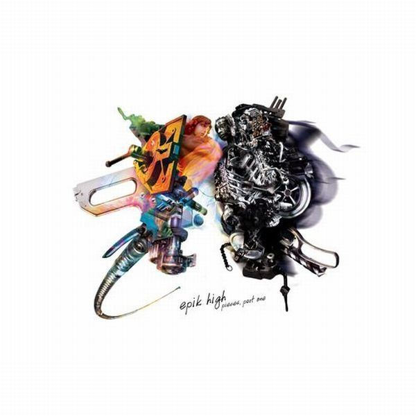

안녕하세요, 라보엠입니다.
비가 내리는 날이면 어김없이 떠오르는 노래, 에픽하이의 ‘우산(Feat. 윤하)’을 소개하겠습니다. 2008년 발표된 이 곡은 발매 이후 15년이 넘도록 꾸준히 사랑받으며, ‘비 오는 날의 국민송’이라는 별명을 얻었습니다. 에픽하이 특유의 섬세한 랩과 윤하의 청아한 보컬이 어우러져, 이별의 아픔과 그리움을 가장 아름답게 그려낸 곡으로 손꼽힙니다.

비 오는 날의 감성, 그리고 ‘우산’
‘우산’은 타블로의 감각적인 작사·작곡, 그리고 윤하의 피처링이 더해진 곡입니다. 도입부터 들려오는 빗소리와 함께 “어느새 빗물이 내 발목에 고이고, 참았던 눈물이 내 눈가에 고이고”라는 가사가 흐르며, 듣는 이의 감성을 자극합니다.
비가 내리는 풍경 속에서, 이별 후 혼자가 된 주인공의 쓸쓸함과 그리움을 담담하게 풀어낸 가사가 인상적이죠.
에픽하이의 랩과 윤하의 보컬이 교차하며, 사랑했던 사람과 함께 썼던 우산, 그리고 그 우산 아래 남겨진 추억을 그려냅니다.
윤하의 피처링 – 신의 한 수
‘우산’ 하면 빼놓을 수 없는 것이 바로 윤하의 피처링입니다.
윤하의 맑고 힘 있는 목소리는 곡의 분위기를 한층 더 깊고 애절하게 만들어줍니다.
특히 “그대는 내 머리 위에 우산, 어깨 위에 차가운 비 내리는 밤”이라는 후렴구는, 윤하의 보컬 덕분에 더욱 뭉클하게 다가옵니다.
이 곡이 윤하의 솔로곡으로도 사랑받는 이유이기도 하죠. 실제로 윤하는 자신의 버전 ‘우산’을 따로 발표해 또 다른 감성으로 리스너들의 마음을 사로잡았습니다.
에픽하이 - 우산 노래가사
어느새 빗물이
내 발목에 고이고
참았던 눈물이
내 눈가에 고이고 I cry
텅 빈 방엔 시계소리
지붕과 입 맞추는 비의 소리
오랜만에 입은 코트 주머니 속에 반지
손 틈새 스며드는 memory
며칠 만에 나서보는 밤의 서울
고인 빗물은 작은 거울
그 속에 난 비틀거리며 아프니까
그대 없이 난 한 쪽 다리가 짧은 의자
둘이서 쓰긴 작았던 우산
차가운 세상에 섬 같았던 우산
이젠 너무 크고 어색해
그대 곁에 늘 젖어있던 왼쪽 어깨 (뭐해?)
기억의 무게에 고개 숙여보니
버려진 듯 풀어진 내 신발끈
허나 곁엔 오직 비와 바람
(없다) 잠시라도 우산을 들어줄 사람
And I cry
어느새 빗물이
내 발목에 고이고
참았던 눈물이
내 눈가에 고이고 I cry
그대는 내 머리 위의 우산
어깨 위에 차가운 비 내리는 밤
내 곁에 그대가 습관이 돼버린 나
난 그대 없이는 안 돼요. Alone in the rain
Alone in the rain, rain, rain
Nothin' but pain, pain, pain
Girl, I just want you to know
Alone in the rain, rain, rain
Nothin' but pain, pain, pain
And I just can't let you go
하늘의 눈물이 고인 땅
별을 감춘 구름에 보인 달
골목길 홀로 외로운 구두 소리
메아리에 돌아보며 가슴 졸인 맘
나를 꼭 닮은 그림자
서로가 서로를 볼 수 없었던 우리가
이제야 둘인가? 대답을 그리다
머릿속 그림과 대답을 흐린다
내 눈엔 너무 컸던 우산
날 울린 세상을 향해 접던 우산
영원의 약속에 활짝 폈던 우산
이제는 찢겨진 우산 아래 두 맘
돌아봐도 이젠 없겠죠
두 손은 주머니 속 깊게 넣겠죠
이리저리 자유롭게 걸어도
두 볼은 가랑비에도 쉽게 젖겠죠
난 열어놨어, 내 마음의 문을
그댄 내 머리 위의 우산
그대의 그림자는 나의 그늘
그댄 내 머리 위의 우산
나의 곁에
그대가 없기에
나 창 밖에 우산을 들고
기다리던 그대, I cry
그대는 내 머리 위의 우산
어깨 위에 차가운 비 내리는 밤
내 곁에 그대가 습관이 돼버린 나
난 그대 없이는 안 돼요. I need you back in my life
그대는 내 머리 위의 우산
어깨 위에 차가운 비 내리는 밤
내 곁에 그대가 없는 반쪽의 세상
그대 나 없이는 안 돼요. Forever in the rain
버려진 우산
버려진 우산
I need you back
버려진 우산
Without you
섬세한 묘사와 공감의 힘
에픽하이는 ‘우산’에서 이별과 그리움을 빗물, 우산, 젖은 어깨, 고인 빗물 등 일상적인 소재로 풀어냅니다.
“그대 없이 난 한쪽 다리가 짧은 의자” 같은 비유는 타블로 특유의 감수성과 시적 언어가 빛나는 부분입니다.
연인과 함께 썼던 우산, 그리고 이별 후 혼자 남은 우산처럼, 누구나 한 번쯤 겪었을 법한 경험을 노래해 많은 이들의 공감을 얻었습니다.
그래서 ‘우산’은 각자에게 다른 추억과 감정으로 남는 곡이기도 합니다.
비 오는 날의 국민송, ‘우산연금’
‘우산’은 봄에 버스커버스커의 ‘벚꽃엔딩’이 거리마다 울려 퍼지듯, 비가 내리는 날이면 어김없이 플레이리스트에 올라오는 ‘효자곡’입니다.
‘우산연금’이라는 별명처럼, 매년 장마철이 되면 음원차트에 다시 등장하는 곡이기도 하죠.
윤하의 데뷔 10주년에는 타블로가 직접 새로운 버전의 ‘우산’을 선물하며, 또 한 번 화제를 모으기도 했습니다.
에픽하이와 윤하는 다양한 음악방송과 콘서트에서 ‘우산’을 함께 부르며, 매번 뛰어난 라이브 실력을 보여줬습니다.
특히 타블로와 윤하의 듀엣 무대는 팬들에게 깊은 인상을 남겼고, 곡의 감동을 배가시켰습니다.
에픽하이 특유의 랩과 감성, 그리고 윤하의 보컬이 어우러진 무대는 비 오는 날의 쓸쓸함과 따뜻함을 동시에 느끼게 합니다.
맺음말
에픽하이의 ‘우산(Feat. 윤하)’는 이별의 아픔, 그리움, 그리고 비 오는 날의 감성을 가장 아름답게 담아낸 명곡입니다.
섬세한 가사, 윤하의 청아한 목소리, 그리고 에픽하이의 진솔한 랩이 어우러져, 시간이 흘러도 변치 않는 감동을 전합니다.
오늘처럼 비가 내리는 날, ‘우산’을 들으며 지난 추억을 떠올려보는 건 어떨까요?
이 곡이 여러분의 마음에 작은 위로가 되길 바랍니다.